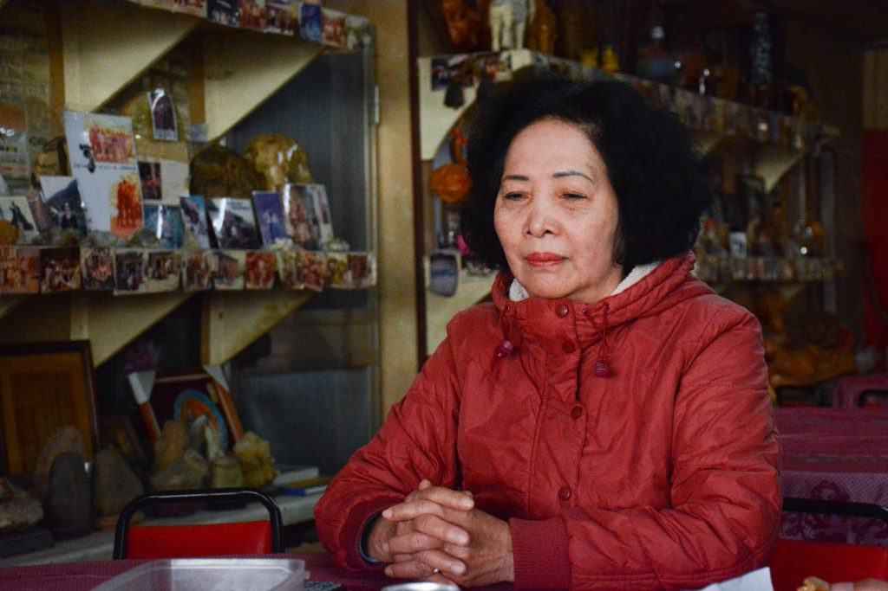
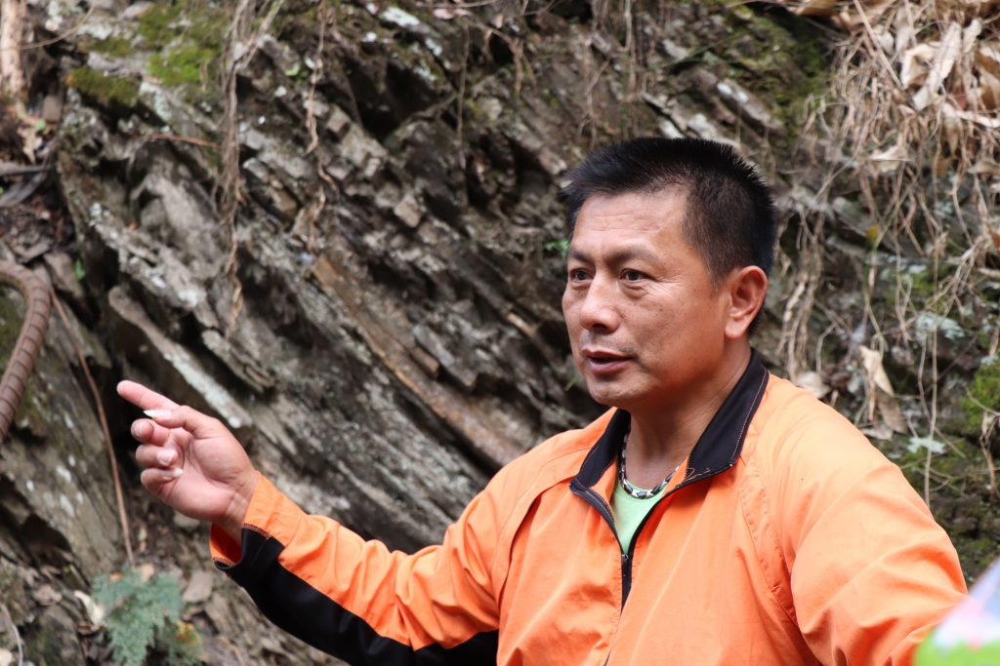
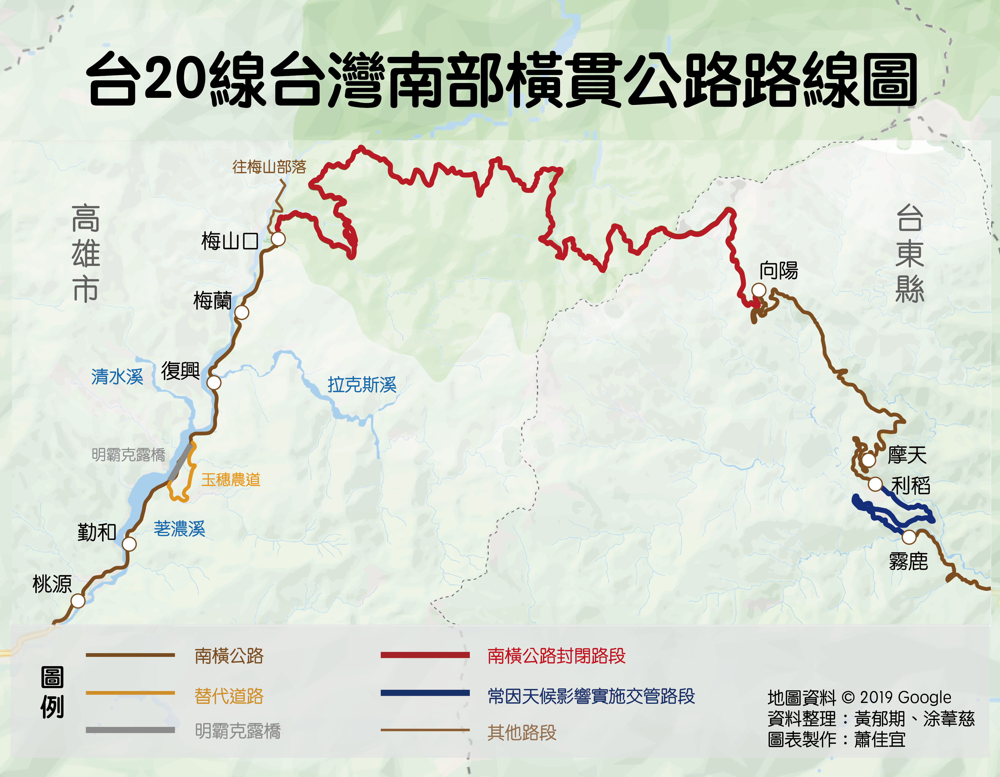
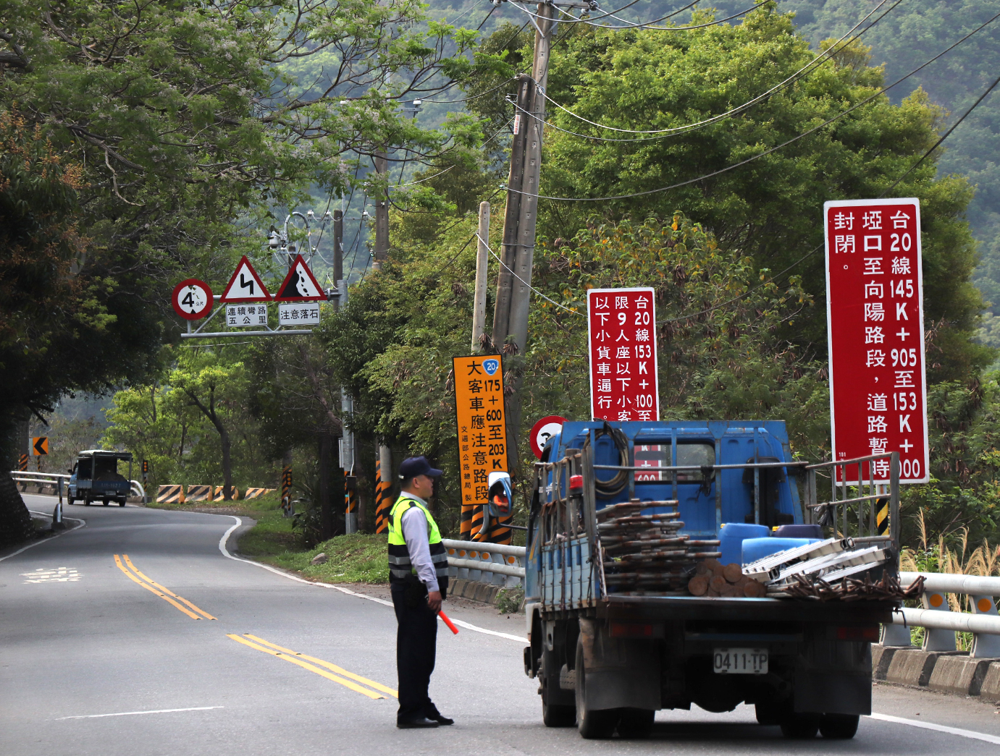
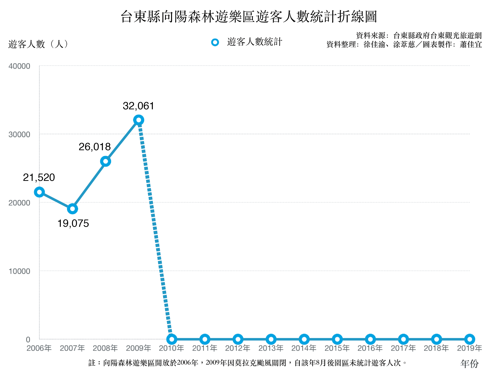
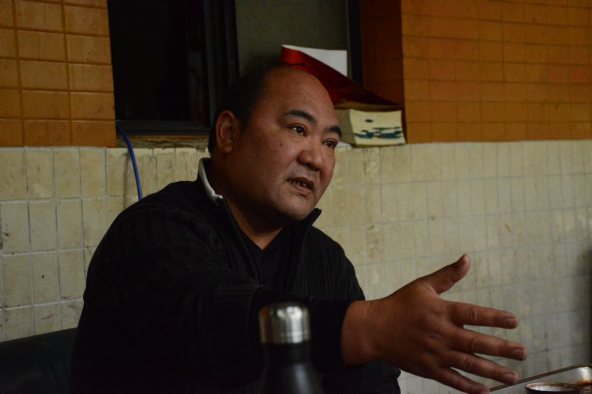
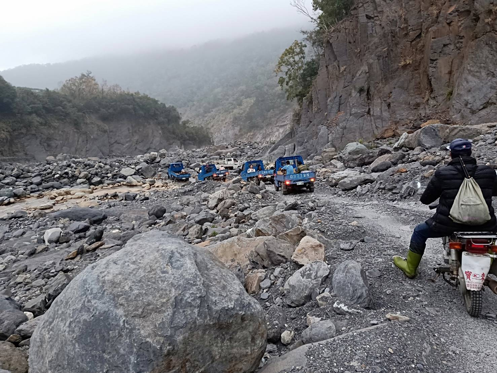
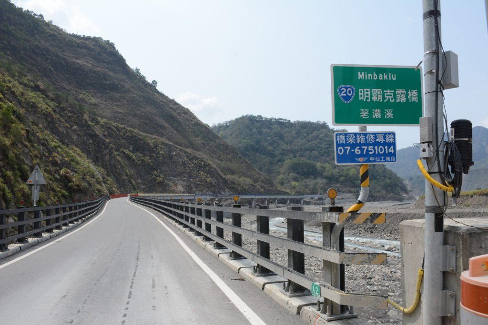
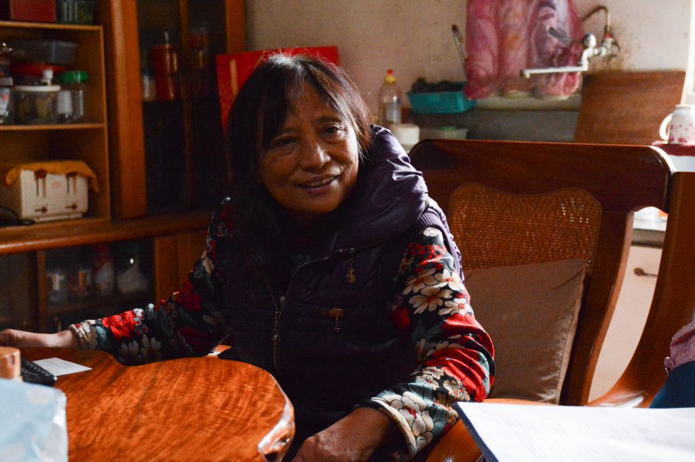

商品介紹
週六正午，行經台20線（台灣南部橫貫公路，俗稱南橫）抵達台東縣海端鄉利稻部落。群山環繞、美景在前，居住於海拔1068公尺的布農族居民，本應坐享南橫交通之便經營餐廳及民宿，在熱門觀光時段等待遊客前來。然而事實並非如此，放眼望去，營業中的餐廳寥寥可數，許多民宿雖高掛招牌卻深鎖大門。三兩隻野狗趴臥在歇業的商家前，因陌生臉孔的出現迅速起身，朝零星到訪的外地人大聲吠叫。仍經營觀光事業的居民們在店內無所事事，看似對單調生活習以為常，卻也藏不住眼底的失落。南橫，路斷人稀已有十年。
連結東西兩地 南橫八景引觀光商機
南橫公路貫穿中央山脈，連結台南、高雄及台東等地。1972年通車後，公路沿線自然風貌和布農族部落文化吸引大量觀光人潮湧入，開設在利稻部落的陳大姐名產店（原「枕戈商店」）便是受惠於南橫公路的商家之一。老闆娘陳秀霞憶起公路甫通車的盛況，「那時候一天都一百台遊覽車，大家都想要來走走看啊！」即使道路原先未鋪上瀝青混凝土，遊客們仍不畏石子路難行，紛至沓來。隨著路面工程愈加完善，沿途觀光產業也愈加興盛，利稻部落更獲得「民宿村」之稱。

開設名產店的陳秀霞，回憶利稻部落在南橫公路受阻前的觀光榮景，言語間透露感慨。 圖／劉信秀攝
位於高雄市桃源區的梅山口同樣地處南橫公路沿線，2009年莫拉克颱風以前，遊客紛紛由此進入南橫公路東段。高雄市桃源區梅山里社區發展協會理事長顏國經提到，過去連假期間遊客總是絡繹不絕，「過年的時候，梅山口交通會打結！」大量遊客促進南橫公路沿線經濟，也造就當地部落繁榮。沿途知名景點天池、檜谷、埡口、向陽、摩天、利稻河階台地、霧鹿峽谷、天龍吊橋也在遊客口耳相傳下，成為著名的「南橫八景」。
莫拉克斬斷南橫 復原遙遙無期
好景不常，莫拉克颱風帶來三天超過2,500毫米的雨量，引發山區土石流並沖毀共22座橋樑，阻斷南橫公路通行。同年8月8日，荖濃溪上游一帶的山坡坍方，堵塞地勢較低的河谷，形成堰塞湖，連日豪雨使得河床難以負荷，在一個夜晚潰堤。高雄市桃源區復興里里長江維明（Dahu-nilu）形容當時場景，「居民看見一個像滾球般混濁的河水往下滾動。」河水四處漫溢，沖上一旁的馬路。他為了避難，背著行動不便的老母親爬上住家附近高地。江維明回想莫拉克颱風，緩緩說道：「那個恐怖跟驚悚的心，只有當時在的人才知道。」

復興里里長江維明對莫拉克颱風當天的場景記憶猶新，坐在坡前生動地描述避難故事。 圖／徐佳渝攝
一場莫拉克颱風，中斷在地居民的一線生機。往後工務段搶修的過程中，又發生2012年611水災、2013年天兔颱風、2014年埡口大崩塌與2016年602水災，對原已脆弱的路段，再度造成嚴重傷害。直至今日，「梅山口」至「向陽」45公里的路段仍嚴重受損，屬封閉管制區，不僅阻斷高雄至台東的路途，南橫八景之三——天池、檜谷、埡口也已與世隔絕近十年。

莫拉克颱風來臨時，沖毀南橫公路沿線眾多橋梁，中斷沿線部落對外交通。 圖／簡敏男提供

除了天災接連阻撓，交通部公路總局第三區養護工程處主任工程司王慶雄表示，南橫公路位於高海拔濕冷山區，正午過後容易起霧，「一天適合工作的時間往往只有四小時左右。」此外，南橫位居深山，沒有替代道路，若前後路段同時發生幾處坍塌，大型工程機具無法深入內部崩塌處。「如果前方路段發生災害，後方的修復整個是停下來。」王慶雄說：「所以公路單位只能一段一段慢慢修。」種種困難加上山區落石頻繁，使居民賴以維生的交通要道，至今仍處在漫長的修復工程中。
梅山明隧道旁的山坡地崩塌後，缺乏植被保護的地表使施工更加困難。 圖／黃郁期攝
山地地形增加道路修復難度，施工工人需同時進行邊坡防治及路基穩固工程。 圖／黃郁期攝
西部路段在2017年明霸克露橋正式完工後，大抵修復完畢，復興、梅蘭和梅山等地居民，也重獲交通之便，生活逐漸回復過往水準。東部通往霧鹿、利稻及向陽的路段，仍有多處施工，經常受天氣影響實施交通管制。遙遙無期的修復工程，讓居民渴望通車的心情無處安放。
高山公路邊坡路基下陷，施工修復時道路僅足夠汽車單向行駛，會車不易。 圖／劉信秀攝

關山通往利稻路段，警察正攔檢一輛小貨車，旁邊紅色標誌顯示埡口至向陽路暫時封閉。 圖／黃郁期攝
利稻生活難返榮景 居民力拚復甦死城
「工務段要盡快讓這條道路趕快通，不然這裡真的是死城。」利稻村村長古金福（族名：vilian）語氣間充滿無奈。放眼望去利稻村，營業中的店家屈指可數，部落安靜如山中孤島。利稻村鄰長古利雄（ibi）提起昔日榮景：「這邊道路還沒斷的時候，小時候那些連續假期，連腳踏車都不能在馬路上過，人擠車子喔！」南橫交通之便帶來的觀光人潮，如今已成過往。

「在出遊的時候，他們（遊客）希望一個循環式的，那如果從甲仙就可以往關山、池上，這樣子每個景點都可以碰到。」古利雄說明，由於南橫公路連接台東至高雄的中間路段，仍屬封閉管制區域，遊客無法透過南橫一次看盡東西部風景，導致吸引力下降，並影響觀光人潮。觀光產業越加蕭條，居民被迫轉以務農維生，卻仍因南橫公路阻斷，無法將作物銷往西部地區。「現在我們市場的選擇性少，只能就近的腹地去做銷售，以致於我們的競爭力下滑。」古金福更補充，花東地區的農產品需求量相對較低，「因為沒有辦法消化掉（農產品），我們就把價錢壓低，壓低之後的價錢就沒有辦法生活了。」為因應現況，居民選擇種植高麗菜、番茄等全年生產作物，爭取多次銷售機會，以維持生活水平，卻仍難以調適南橫阻斷帶來的不便。
去年（2018年）底，隱忍九年的利稻居民第一次綁上白色頭巾、舉起抗議看板，遊行至關山工務段抗議。古金福質疑工務段未盡監督義務，導致工程一再延期，卻未清楚交代延宕原因，「去年我們沒有碰到下大雨，也沒有碰到颱風，他竟然可以講說『災區擴大』這四個字！」對此，關山工務段副段長邱坤寶提到，去年雖沒有颱風等顯著災難，但西南氣流帶來的雨量仍影響山區地貌，且過去天災對山地造成的傷害也需時間復原，因而無法對工程時限提出承諾。古利雄坦言對未來的修復進度不敢抱持太多期望，怕期待越高，往後將面臨更大的失落。

利稻村村長古金福提到南橫公路阻斷後對部落民生造成顯著影響，盼公路盡速修復開通。 圖／涂葦慈攝
聯外交通修復 梅山口境遇獲改善
南橫西段梅山口附近包括梅蘭、復興、梅山一帶居民，也因經濟上仰賴聯外道路，殷切期盼南橫全線通車。當地居民多種植一年採收一次的梅子、李子，因此須在當季及時銷售。然而莫拉克颱風後，公路經常中斷，部落經濟受到影響，顏國經說：「前兩年採收時間，整個交通中斷，一年下來的紅肉李都給猴子。」往後幾年，居民進出梅山口部落須經過玉穗農路及荖濃溪河床便道，然而一場大雨隨時可能沖垮臨時道路，阻斷對外交通。居民為了生存，只能仰賴中盤商前往部落，以較低廉的價格收購農產品。

在2017年明霸克露橋開通以前，居民進出部落皆須通過玉穗農路及荖濃溪河床便道，圖為居民行經荖濃溪河床便道的景象。 圖／江維明提供
所幸，隨著明霸克露橋開通，梅山口聯外道路已修復完畢。農民不再仰賴中盤商，而能直接向遊客販售農產品，獲得更多利潤。除此之外，交通便利亦帶動部落觀光，顏國經提到：「現在我們部落觀光也有在起色，會利用假日遊客進來做一點小攤位。」他認為，近年「深度旅遊」興起，若能結合在地農特產品與部落文化發展「部落觀光」，將能促進經濟，提升居民生活品質。

2017年開通的明霸克露橋，成為復興、梅蘭、梅山三里居民通往高雄市區的重要途徑。 圖／涂葦慈攝
梅山里社區發展協會理事長顏國經提到自己對部落發展觀光樂觀態度，也期待藉此提升居民生活品質。 圖／徐佳渝攝
梅山口附近部落雖與利稻同樣期盼南橫公路全線通車，然而江維明認為，催促工務段開通南橫公路，可能影響修復品質。他曾親自前往梅山口至向陽的封閉路段，瞭解工程現況。他提到梅山口後方的長青祠，因大雨崩塌近一百公尺，工務段完成修補後，埡口也發生坍塌，崩塌完的光滑石壁成為施工面臨的重大考驗。「那時候他們有一點想要放棄，因為那個很難施工，但他們還是克服了。」他同時分享，工務段曾打趣地說：「你們里民也要一直為我們禱告啊，祈求上帝今年的雨不要下那麼多，讓山趕快穩固，不要再垮了。」
路斷情不斷 布農人不畏路阻探親尋醫
「以前那個『野狼125』都可以騎過去了，何況現在大家都有車。兩個小時就到了，以前的關係是真的很緊密。」古金福言語間透露對公路開通的希冀。南橫曾是利稻、梅山兩地布農族人維繫情感的重要途徑，遭阻斷後，取代南橫成為尋親探戚之路的，卻是車程近五小時的南迴公路。雖然便捷不再，家族意識強烈的布農族人，仍竭盡所能建立彼此間的連結。在利稻部落經營民宿的余春蘭，直言公路阻斷對族人往來並無影響，「喜事啦喪事，比如說我們有親戚在梅山或桃源那邊，我們還是會想辦法從這邊過去。」十年以來，團結是破除距離屏障的利刃，古利雄堅定地說：「親情都在，哪怕路斷了，我們的親情都還在，不會因為路斷了就什麼都沒了。」

在利稻經營民宿的余春蘭，提到南橫公路阻斷使族人聯繫困難，但並不影響族人情感。 圖／徐佳渝攝
古利雄同時也分享，自己年幼時曾發過一次嚴重高燒，但因當時部落內醫療資源不足，又因南橫阻斷對外交通不便，父母親便背著年幼的自己徒步至和利稻村相距9.9公里遠的天龍橋，坐別人的車到關山急診，才獲得醫療協助。南橫阻斷十年間，不論是延續家族情感和爭取外部資源，居民都在自尋解方，一一破除困境。
「臨時便道」盼搶通 南橫居民困境中求出路
「我們也慢慢在嘗試，不要一次就讓工程到位。」王慶雄表示，目前考量「梅山口」至「向陽」路段附近地質脆弱不穩定、路寬不符省道標準且常有落石坍方，去年公路總局已將該路段降低層級至「臨時便道」（現為「台20臨105線」）。他說明，臨時便道以較簡約的工法修建，不影響道路修復品質，期待藉此加速搶通，儘速還給居民交通便利，後續再加以補強，最終恢復至道路原有標準。
南橫沿線居民和工務段共同走過十年修復歷程，其實都在朝著同樣的方向努力，邱坤寶坦言：「事實上我們做這些，都是為了村民，為了這條道路。」公路與人，在這段漫長的時日裡相依、相存。江維明說梅山居民早已在收入擺盪間學會安然自處，無法發展觀光，便回歸早先的務農日常；在勞心勞力栽植的作物有所起色、對外交通陸續恢復後，再次推廣特色觀光。古金福則言，利稻人天性單純、慣於忍讓，因滿懷對通路的渴望，才憤而起身爭取權益，與此同時，也在困境中奮力找尋安穩生活的出路。
南橫修復之路尚未走完，人人都在與地共處的生存之「道」上，不停向前。